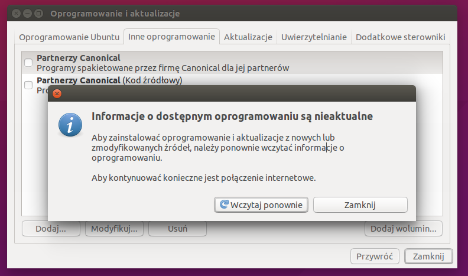

Conocer el software instalado
Para mantener, auditar y solucionar incidencias es necesario conocer qué software hay instalado, su versión y su origen. Cada sistema ofrece gestores de paquetes y herramientas gráficas para esta tarea.

1. GNU/Linux: dpkg, apt y rpm
Las distribuciones basadas en Debian (Ubuntu, Mint) usan dpkg y apt; las de Red Hat usan rpm y dnf.
# Listar paquetes instalados (Debian/Ubuntu) dpkg -l # Buscar a qué paquete pertenece un archivo dpkg -S /usr/bin/python3 # Información de un paquete concreto apt show firefox
2. Windows: winget y Panel de control
Windows 10/11 incluye el gestor de paquetes winget. El comando winget list muestra las aplicaciones instaladas con su versión.
# Listar aplicaciones instaladas winget list # Buscar una aplicación winget search notepad # Mostrar información de una instalación winget list --name "Google Chrome"
flowchart TD
A[Identificar software] --> B{SO}
B -->|Linux Debian| C[dpkg -l / apt]
B -->|Linux Red Hat| D[rpm -qa / dnf]
B -->|Windows| E[winget list]
C --> F[Versión y origen]
D --> F
E --> F
A --> G[Herramientas gráficas]
G --> G1[Software de Windows]
G --> G2[Synaptic]
3. Herramientas gráficas
Además de los comandos, existen utilidades visuales: el Panel de control > Programas o la Configuración > Aplicaciones en Windows, y gestores como Synaptic o la tienda de software en Linux. Estas herramientas permiten ver, desinstalar y actualizar de forma sencilla.
mindmap
root((Identificar SW))
Gestores CLI
dpkg apt
rpm dnf
winget
Gráficos
Panel de control
Configuración Win
Synaptic
Datos clave
Nombre
Versión
Editor
Licencia
Ejemplo resuelto en clase
Caso práctico: Conocer el software instalado.
- Windows: 'Agregar o quitar programas' lista lo instalado con su versión.
- Linux:
dpkg -loapt list --installed. - Anota nombre, versión y editor de 5 programas.
- Explica para qué sirve inventariar el software (licencias, actualizaciones).
graph LR WIN[Agregar/Quitar] --> LST[Lista SW] LNX[dpkg -l] --> LST
Ejercicio para resolver (que propone el profesor al alumno): El alumno entrega un inventario de 5 programas instalados (nombre, versión, editor).
Ampliación de contenido
Para entender lo anterior (puentes conceptuales)
- Saber qué hay instalado es "el inventario del coche". Sin él, no sabes si una app falta, está desactualizada o es la causante de un fallo.
- Gestor de paquetes = "el registro oficial". Lo que instalaste por ahí queda anotado (nombre, versión, origen). Lo que bajaste a mano (un .exe suelto) a veces no aparece en el registro del gestor.
- Nombre, versión y editor son los "tres datos clave". Con ellos decides si actualizar, si hay conflito de licencia o si es software no deseado.
Para profundizar en los contenidos actuales
Debian/Ubuntu: dpkg y apt. dpkg -l lista lo instalado a nivel de paquete; apt show firefox da versión y descripción; dpkg -S /ruta dice a qué paquete pertenece un archivo (clave para saber de dónde salió un binario).
Red Hat: rpm y dnf. rpm -qa lista; dnf list installed lo mismo vía el gestor. Mismo concepto, distinta herramienta según la familia de la distro.
Windows: winget y Panel de control. winget list muestra apps (especialmente las instaladas por ahí); el Panel de control > Programas lista casi todo. Ojo: winget solo ve lo que él gestiona; un programa instalado a mano puede no salir.
Por qué importa la versión. Muchas incidencias son "bug de la versión X ya corregido en la Y". Identificar la versión es el primer paso de cualquier diagnóstico y de la gestión de parches.
Software no deseado (bloatware). Equipos de fábrica traen apps preinstaladas innecesarias o incluso peligrosas. Identificarlas y quitarlas forma parte del mantenimiento de un aula.
Revisión didáctica
- "Tengo el .exe" no significa "está registrado". Una app instalada a mano puede no aparecer en winget ni en el registro del gestor; para auditoría hay que mirar también las carpetas de programa.
- dpkg no es "lo mismo que apt". dpkg gestiona paquetes individuales a bajo nivel; apt resuelve dependencias y baja del repositorio. Son capas distintas.
- La versión importa, no solo el nombre. "Tengo Python" no basta; "Python 3.11" sí. El diagnóstico exige la versión concreta.
- winget list no ve todo. Solo lo que winget instaló/gestiona; usarlo como única fuente da inventarios incompletos.
- "Desinstalar" desde el explorador no limpia. Hay que usar el gestor (Panel de control o winget uninstall) para quitar registros y dependencias.
Hilo de aprendizaje sugerido: (1) por qué inventariar el software → (2) Debian/Ubuntu: dpkg/apt → (3) Red Hat: rpm/dnf → (4) Windows: winget y Panel de control → (5) datos clave (nombre/versión/editor/licencia) → (6) detectar versiones viejas y bloatware.
Enlaces relacionados
- Búsqueda de información
- Utilidades de gestión de información
- Criterio RA3-e: particiones y unidades lógicas
Recursos externos
Vídeos y artículos recomendados para ampliar y preparar el tema: